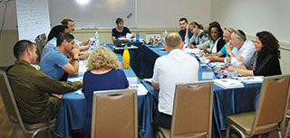

יעוץ קבוצתי בן 6 מפגשים שמטרתו להיענות לצורך של הבוגרים, שכמנהיגים בתחומי החינוך והחברה, רבים מהם פועלים מול גורמים בינלאומיים ונדרשים לא אחת להציג את חזונם ואת פועלם המקצועי בשפה האנגלית בפני עמיתים מחו"ל, אורחים, בכנסים מקצועיים ואקדמיים ובפני בעלי עניין אחרים ושואפים להתנהל מתוך תחושה של בטחון עצמי ויכולת הבעה, שאיננה נופלת מיכולתם בשפה העברית. במענה לצורך זה פיתחנו ביחידת הבוגרים, בשיתוף מומחים בהוראת אנגלית למבוגרים, ייעוץ קבוצתי שמטרתו לאפשר לבוגרים רכישת כלים לשיפור מיומנויות דיבור, כתיבה וקריאה באנגלית במגוון תחומים הדרושים בחיי העבודה כגון: הצגת חזון, בניית שותפויות בין תרבותיות, כתיבה וקריאה של חומרים מקצועיים, ניהול דיאלוג עם תורמים, שותפים, ועוד.

קורס לפיתוח מיומנויות תקשורת בשפה האנגלית
2016-05-17